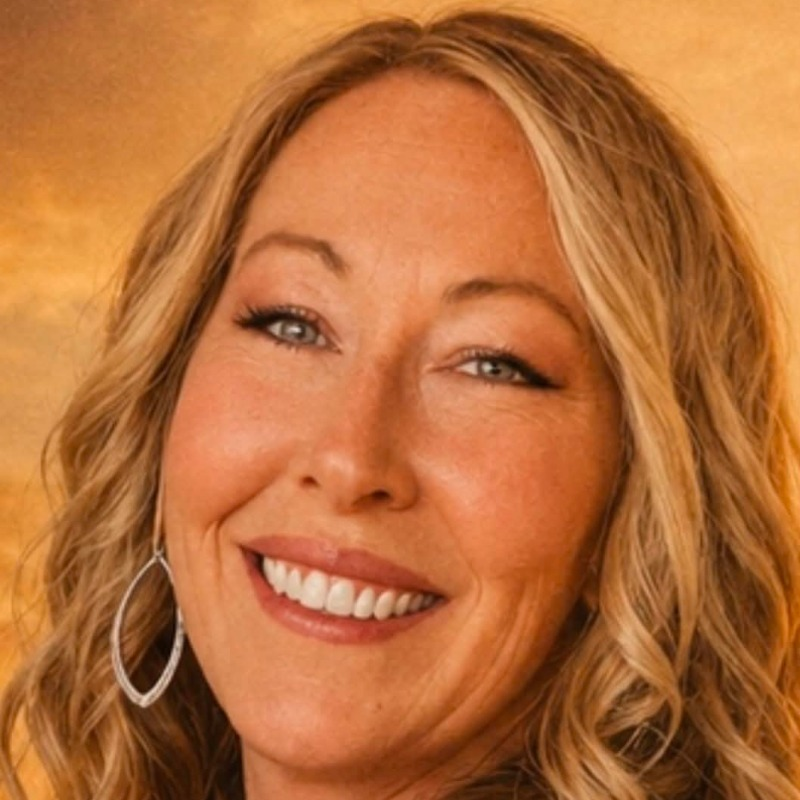

Welcome to Toes In The Sand
Music and Entertainment Gateway
Featured Writer: D. Bryan Knight

Discover the lyrical genius behind the sunset melodies.
"Raised on George Jones and harmonies from groups like Alabama and Restless Heart, writing songs like that and singing around my hometown in Kansas was all I did. I moved to Nashville in 1988 and immediately landed a job at the television show Hee Haw. Not writing or singing but dealing merchandise out of a closet that was backstage of the Grand Ole Opry. Met many artists that I grew up listening to on the radio but fast forward 6 months, I got fired because I was too busy meeting artists and not getting the orders out! It was fun and I really enjoyed the Opry from backstage just watching and learning from the best. Since then, music has still played a major role in my life and one thing has never changed for me and that is the dream of writing that one great song that can change a life. Til then, I'll keep my toes in the sand and keep writing songs!"
D. Bryan Knight
🎵 Listen Now: Slow Dance
Featured Newcomer
Liz Thompson

Spotlighting the freshest talent in the acoustic scene.
"Music has always been at the heart of my life. Growing up in a deeply musical family, I developed a passion for performing at an early age, with influences spanning classic rock, country, pop, and blues. In 2005, I made the move to Nashville to pursue my dream, where I've had the privilege of performing at iconic venues including the Bluebird Café's Sunday Spotlight Series, Hard Rock Cafe, Nashville Underground, Opryland Hotel, and many others. One of the greatest honors of my career was being invited to perform for the U.S. Ambassador at the Fourth of July Celebration in Mexico City. Every opportunity to share music with others has been a blessing, and I continue to be inspired by the journey. When I'm not on stage, you'll find me spending time with my wonderful family, loving on my dogs, and enjoying the beauty of the outdoors. Music is my passion, but the people and moments I cherish most are what truly keep me grounded."
Liz Thompson
"I really like that people will be able to relate to this because most people want to fight for what they have. Sometimes they just get lost along the way and lose sight of each other. I think it is a beautiful song about reconnecting. Liz Thompson"
🎵 Listen Now: Don't Ask Me To Walk Away
Latest Release
Stream our newest summer anthem now on all platforms.
Trending Songs
-
Don't Ask Me To Walk Away
"I really like that people will be able to relate to this because most people want to fight for what they have. Sometimes they just get lost along the way and lose sight of each other. I think it is a beautiful song about reconnecting. Liz Thompson"
- Slow Dance
News & Events
Catch us live at the Coastal Music Festival next month! Stay tuned for tour updates.